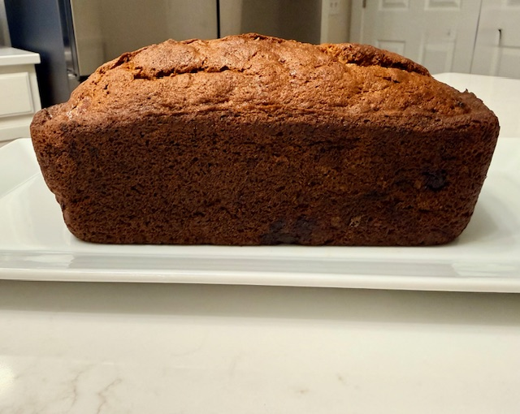
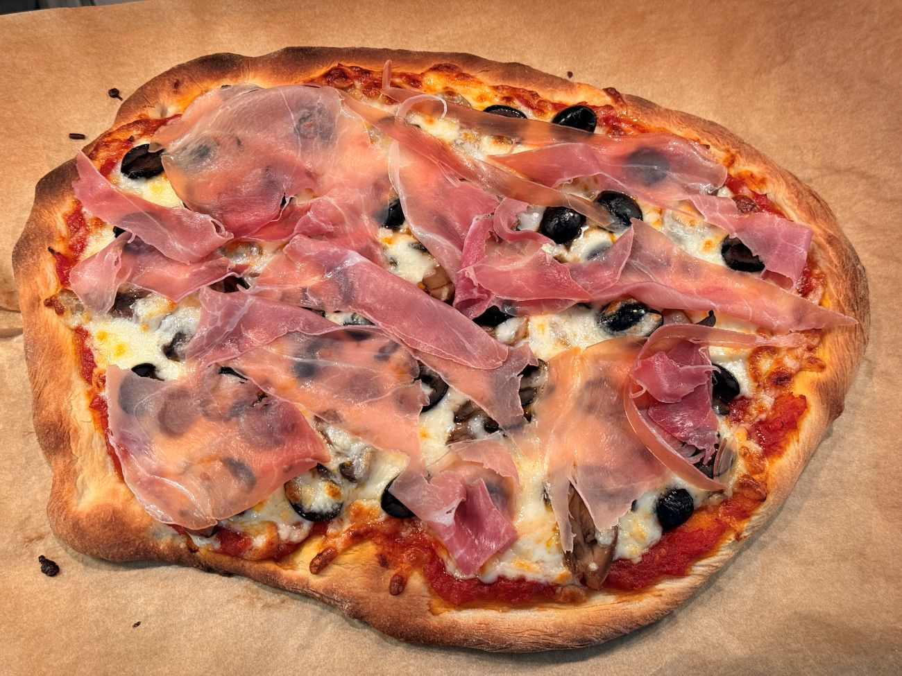
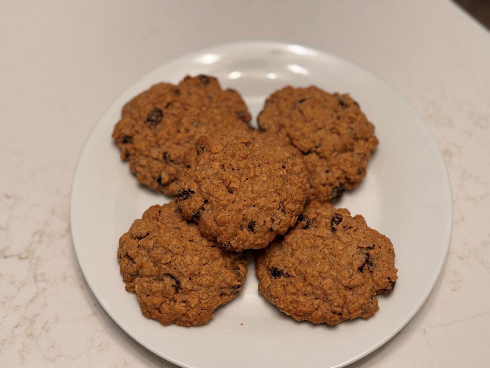

Season · Craft · Curiosity
A kitchen shaped by season and craft.
Our kitchen is where ingredients are handled with care, techniques are practiced and refined, and discoveries — whether from heritage tools or seasonal finds — deepen the rhythm of daily cooking. Here, nourishment is not rushed. It is built through repetition, curiosity, and an openness to both tradition and exploration.
How We Cook
We cook with two instincts that meet at the same table: one intuitive and improvisational, the other grounded in the meditative work of baking and fresh pasta.
Together, they shape a kitchen that values both feel and craft. We choose ingredients with intention — Italian 00 and semolina flours milled with care, organic produce where it matters most, and seasonal offerings from the farmers market. Whether at home or away, we look to local markets for a sense of place: what’s growing, what’s in season, and what stories the ingredients carry.
At home, the weekly market has become ritual. We wander, taste, and let the colors and scents guide the meals ahead — a reminder that cooking is as much about connection and seasonality as it is about technique.
Explore the Kitchen
Six ways into the kitchen — from the things we make to the tools, techniques, and discoveries that help us make them.
- BakingSlow breads, rustic loaves, and simple desserts that reward patience.
- CookingSeasonal, ingredient-driven meals rooted in simplicity and harvest.
- RecipesA curated collection of complete dishes — organized and ready to make.
- Essential ToolsThe foundational equipment and kitchen staples that make thoughtful cooking possible.
- Tips & TricksPractical techniques and efficiencies that elevate everyday meals.
- New FindsRecent discoveries, tools, and inspirations worth sharing.
Make · Bake · Discover
From the Kitchen
Three things worth making, learning, and lingering over — one from each of our core kitchen traditions.

Baking
Rick's dependable banana bread
A cozy, nut-free banana bread with big flavor and the unmistakable aroma of something good in the oven.

Cooking
Making your own pizza at home
A practical way to act on that thought about making your own pizza, using store-bought ingredients.

Recipes
Oatmeal raisin meets spice cookie
A mash-up of two familiar favorites, with the warmth and character of a fall baking day.